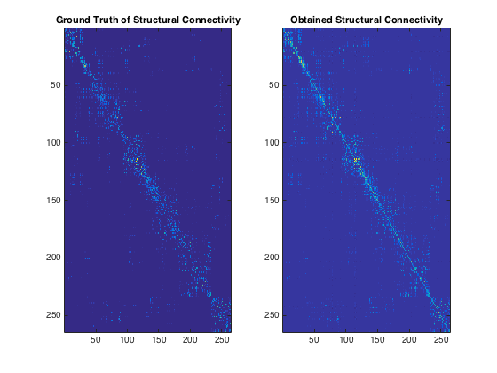

%{ Model Inversion: Estimating Structural Connectivity given functional connectivity and degree of structural graph WITHOUT SVD; Use the Obtained Functional Conn. directly with best t Data: Autism TD(Typically Developing i.e, Healthy samples) Age Group: 4 to 20. ROI: 264 source: http://umcd.humanconnectomeproject.org Authors: Abbhinav Venkat, Govinda Sriniwas Surampudi Creation Date: 14/12/2015 First run struct_to_func.m Then, run this file. %} %*************************************************************************% %Using the Obtained Functional Conn. directly with best t Cf = H_s2{t}; Cf = round(Cf, 10); symm_check = Cf - Cf'; assert(isempty(find(symm_check~=0, 1))); %To check for symmetry of Cf [nvec, nval] = eig(Cf); temp_val = sum(nval, 2); %Replacing all -ve and 0 eigen values with a very small number [m, n] = find(temp_val <= 0); temp_val(m) = 1*10^(-5); %Only temporary fix gamma = -log(temp_val)/t; %Re-computing L L = nvec*diag(gamma)*nvec'; %Finding Structural Connectivity C = (D_s^0.5)*(diag(ones(size(W_s,1),1)) - L)*(D_s^0.5); C = round(C, 10); %*************************************************************************% %Correlation between emerical and estimated structure - Pearson Coeff. mean_calc = mean2(C); W_s = round(W_s, 10); mean_ground = mean2(W_s); C1 = C - mean_calc; W1 = W_s - mean_ground; temp = C1.*W1; C1_sq = C1.*C1; W1_sq = W1.*W1; pear_corr_2 = sum(temp(:))/(sqrt(sum(C1_sq(:)))*sqrt(sum(W1_sq(:)))); disp('********** Model Inversion : Structural from Functional ***********'); disp('Without SVD'); disp('Correlation'); disp(pear_corr_2); figure; subplot(1, 2, 1); imagesc(W_s); title('Ground Truth of Structural Connectivity'); subplot(1, 2, 2); imagesc(C); title('Obtained Structural Connectivity'); %*************************************************************************%
********** Model Inversion : Structural from Functional ***********
Without SVD
Correlation
0.8228
